A complete reference to the Serenity meditation app: what it does for the people who use it, how it is built, where data lives, and what to finish before it ships.
Contents
I · Introduction
Serenity is a guided meditation and wellbeing app for phones and tablets. It offers guided sessions, multi-day programs, sleep tools, read-aloud stories, gentle yoga, a daily reflection and a built-in guide called Kapwa, all in one quiet, dark-first interface.
These principles shaped the product, and they explain many of the decisions in this document.
| Platform | How it is delivered |
|---|---|
| Android app | A Capacitor 8 native shell around a static export of the web app. Package com.linus2002.serenity, minimum Android 7.0 (SDK 24), target SDK 36. Test builds download from the /get page (4.19). |
| Web / installable app (PWA) | A Next.js 15 deployment that can be installed to the home screen and works fully offline once installed. |
| iOS | Installable today as a web app from Safari, using the Add to Home Screen guide at /iphone. A native app is supported by the codebase (npm run open:ios), but the Xcode project has not been created yet. It needs a Mac (see section XI). |
II · Serenity at a glance
The content is managed in the Sanity CMS. It is built into the app and also updates live in installed apps. The figures below are taken from the content in this release.
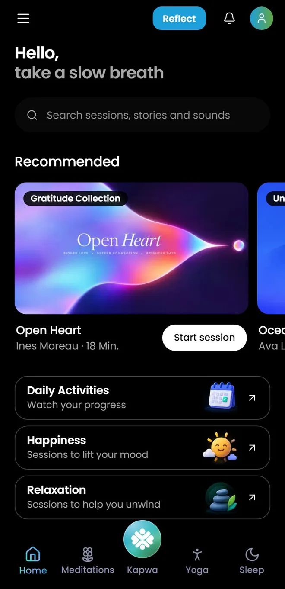
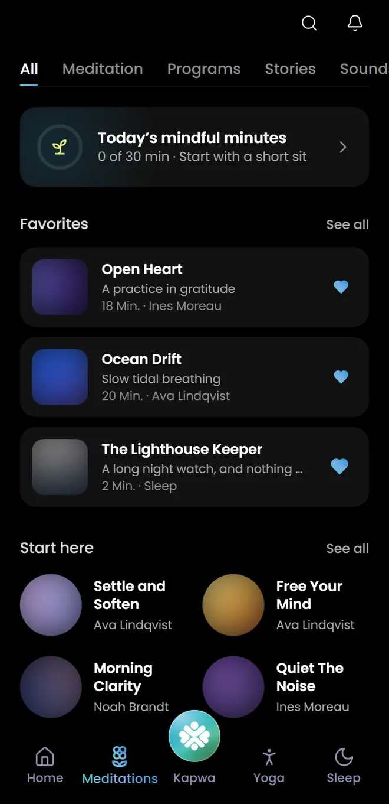
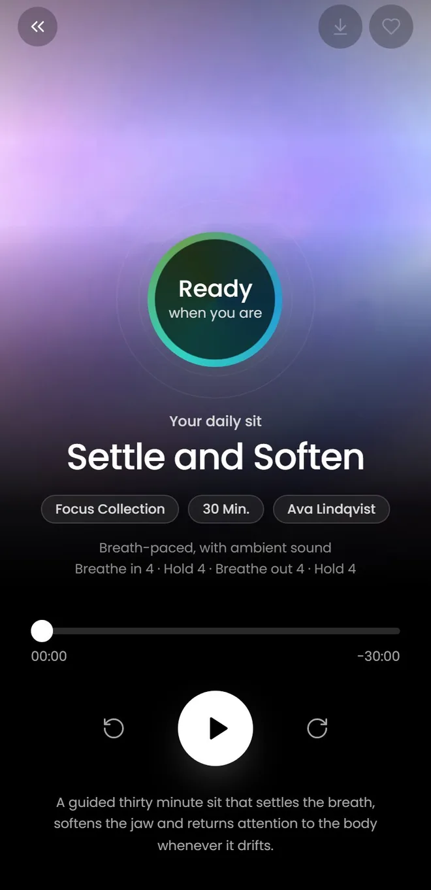
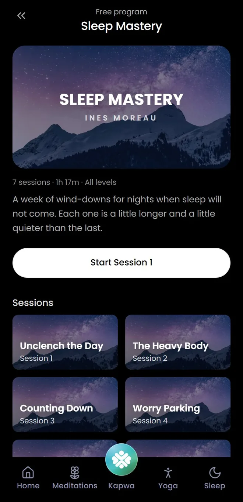
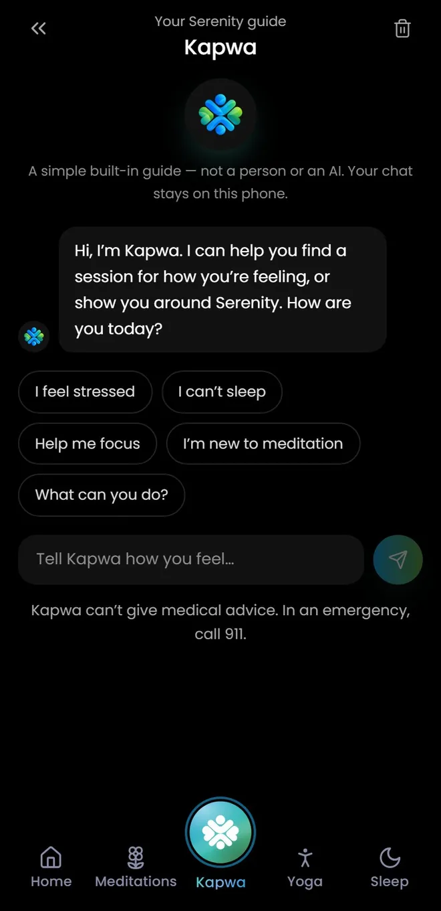
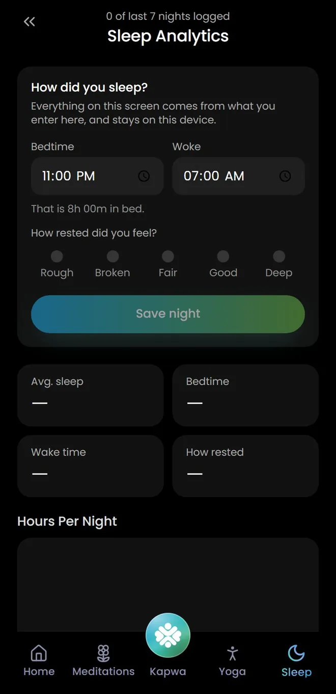
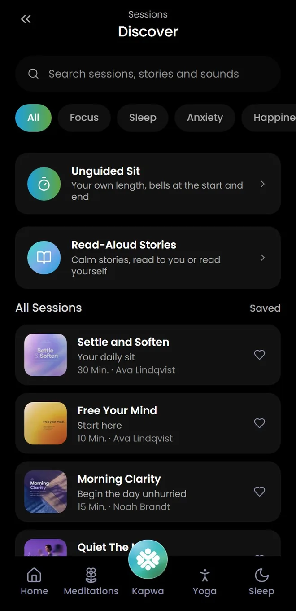
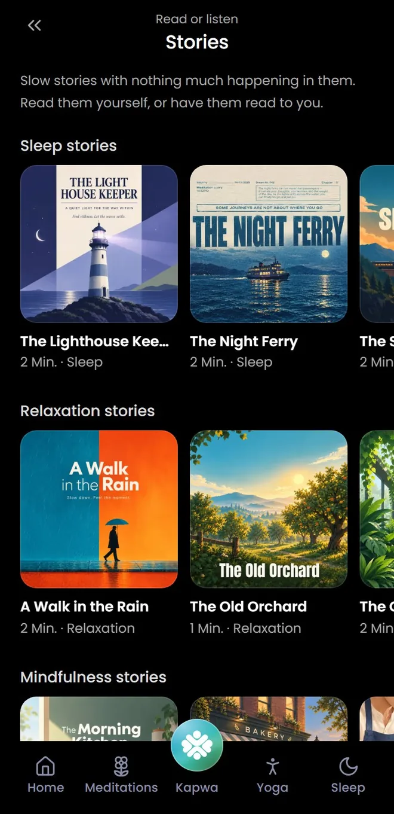
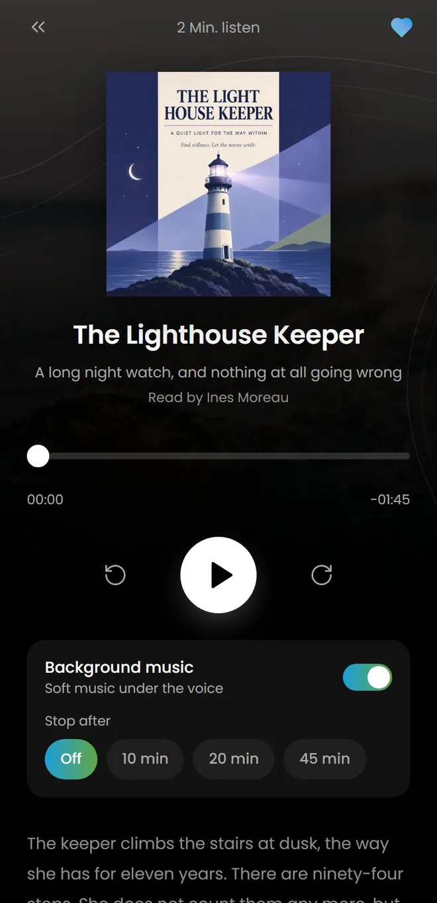
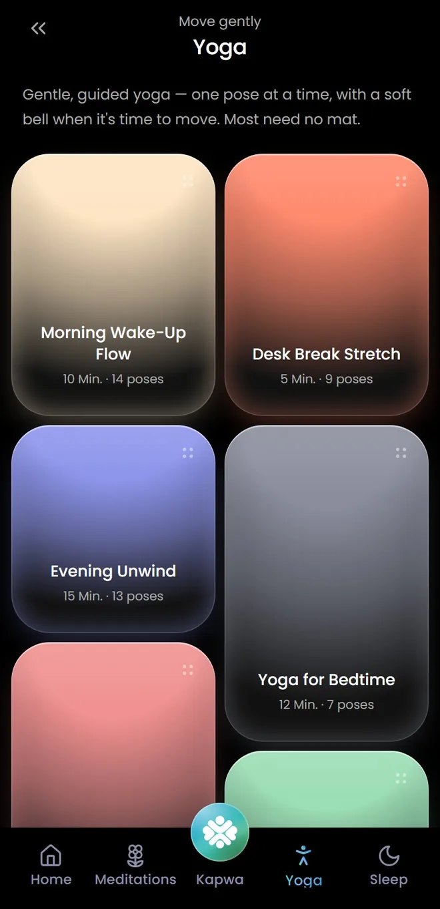
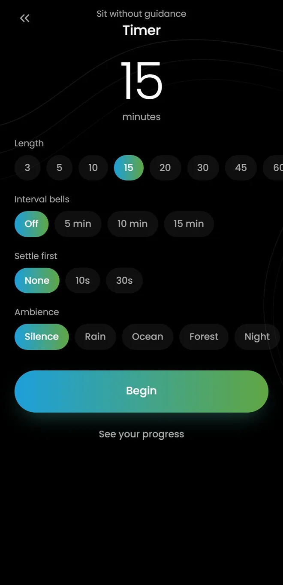
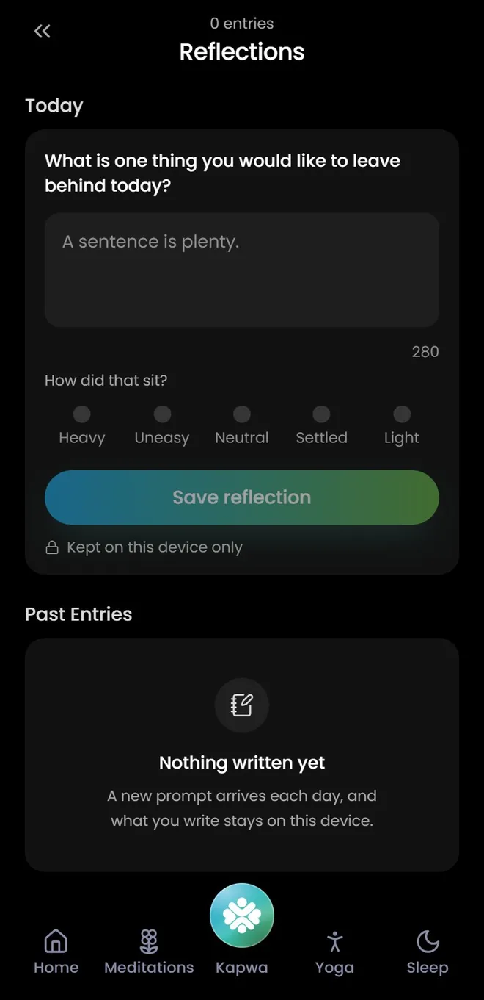
III · Getting around
A new user sees a short tour, then chooses whether to sign in or browse as a guest. After that the app opens straight to Home.
/). Waits until the device's saved state has loaded, so the wrong screen never flashes. First-time users go to the tour, everyone else to Home. router.replace keeps the tour out of the back history./welcome). Four swipeable steps, always shown in dark mode: the brand sweep, a grid of session artwork, "New in Serenity" (every feature, each with an icon and one line), and the intro screen. Finishing or skipping marks the tour as done./login). Three options: Continue with Email, Create Account or Browse as a guest. A ?next= parameter returns the user to where they were going, and only in-app paths are accepted.The bottom bar has five places: Home, Meditations, Kapwa (the raised centre button, drawn with the app's logo), Yoga and Sleep. Discover, Search, Stories, Programs, Mixes, Reflections, Notifications, Calendar, Downloads and Profile are reached from Home, from the header controls and from Profile. Players open full screen, without the bottom bar.
Navigation is designed to feel immediate. Screens have no entry animation, the tab highlight moves on tap, and destinations are prefetched. Transitions measured on a production build took 14–99 ms.
Accounts use passwordless email sign-in: Supabase sends a one-time code, and the user types it in. There are no passwords and no social logins. Creating an account stores the first and last name.
| Guest | Signed in | |
|---|---|---|
| Browse the library, programs and home | Yes | Yes |
| Play sessions, timer, stories and yoga | No (asked to sign in) | Yes |
| Activities, reflections, assessment, Kapwa, mixes, calendar | No (asked to sign in) | Yes |
| Practice synced across devices | No | Yes: sittings, resume points, ratings |
| Like a home video | Yes, through an anonymous account | Yes |
| Help & support (raise a concern) | No (asked to sign in) | Yes |
The gate is src/components/layout/account-gate.tsx. If a build has no Supabase keys, every user is treated as a member, so the app still works without a backend. Signing out keeps the user's data on the phone.
IV · Features
Each feature is described as the user meets it, followed by notes on how it works and where its code lives.
Home opens with a greeting for the time of day and a search field, followed by a Recommended rail of session cards. The next card peeks in from the side, and the rail snaps as it scrolls. Below that sit shortcut cards (Daily Activities, Happiness, Relaxation), a rail of short videos users can like, the featured programs, Yoga for today, and the day's reflection prompt.
Until the user completes the check-in (4.13), Home invites them to take it. After that, their personal picks lead the library lists.
Where: src/app/(app)/home, src/components/home/. The content comes from the Sanity homePage, deckCard and homeVideo documents.
Meditations is the library, with tabs for All, Meditation, Programs, Stories, Sounds and Yoga. It shows today's mindful minutes, favourites and a "Start here" set. Discover adds category chips (Focus, Sleep, Anxiety, Happiness and more), the unguided sit, read-aloud stories and the full session list.
Search (/search) is a full-screen search across sessions, stories, soundscapes, programs, yoga and the app's own screens, with mood suggestions to tap. Typing a program's name also finds its sessions. The search words are kept in the address (?q=), so going back returns to the same results.
Favourites and recently played sessions are saved on the device. Users can also rate sessions, and ratings sync for signed-in users.
Where: src/app/(app)/meditations, discover, src/app/search, src/lib/search.ts, src/lib/ratings.ts.
The player has a breathing orb, a scrubber and play, pause and ±15 s controls (Space or K on a keyboard). The orb's breathing phase is calculated from the session clock, so the ring, the phase label and the countdown always agree.
Where: src/app/player/[id], src/components/player/, src/hooks/use-player.ts, use-breath.ts, use-session-track.ts.
Programs are short courses of sessions taken in order. Each program page shows a cover, the number of sessions and the total length, a Start Session 1 button, and a grid of its sessions.
There are ten programs. The Six Phase (6 sessions), Sleep Mastery (7), A Steady Mind (5) and Open Water (4) are featured on Home. Calm Foundations, Focus Reset, Kind to Yourself, Better Mornings, Letting Go of Stress and Breath School appear in the library.
Every session now has a recording, in all ten programs and in the library. Program and library sessions play their own recordings. Seven library sessions that have no recording of their own share one stand-in mix, stored in Sanity once. The recording sets each session's length.
Recordings are kept in Sanity and streamed from its CDN, so they are no longer in the app package or in git. Editors can upload or replace a recording in the Studio, and its length is measured from the file automatically.
Where: src/app/(app)/programs/[id], src/hooks/use-session-track.ts, the recording field in Sanity, scripts/sanity/recordings.mjs.
A plain sit of 3 to 60 minutes, with optional interval bells, an optional settling pause before the opening bell, and an optional ambient bed (Silence, Rain, Ocean, Forest, Night). Three bells with different pitches mark the start, each interval and the end.
The ring glides smoothly without heavy re-rendering. The countdown follows the wall clock, the digits do not jitter, and the screen stays awake during a sit where the device allows it. Timer sits count toward progress like any other session.
Where: src/app/timer, src/hooks/use-countdown.ts, use-wake-lock.ts, use-session-recorder.ts.
The Sleep tab brings together sleep sessions and stories, an ambient sound mixer, a wind-down timer and Sleep Analytics. Each morning the user can log bedtime, wake time and how rested they felt (Rough to Deep). The tab then shows the average sleep and a chart of hours per night.
When the wind-down timer ends, the sound fades to silence over 20 seconds, with no bell. The sleep log stays on the phone.
Where: src/app/(app)/sleep, src/components/sleep/sleep-mixer.tsx, src/lib/sleep-stats.ts.
Sixteen original, slow stories for sleep, relaxation and mindfulness. Each one is read by a recorded narrator, and the paragraph being read is highlighted as it goes. Optional background music, chosen by the story's category, plays under the voice. A stop-after timer (10, 20 or 45 minutes) fades everything out.
If a recording is unavailable, the device's own voice reads the story sentence by sentence. Users can skip, scrub and see their progress, and the story can still be read silently.
Where: src/app/(app)/stories, src/app/stories/[id], src/hooks/use-story-player.ts, use-narration.ts.
Twenty short, gentle yoga sessions, from a seated desk stretch to floor stretches before bed. Most need no mat. Each session opens on an overview with its length, level, every pose and a safety note. It then plays one pose at a time: the pose name, one instruction, a countdown ring, what comes next and a soft bell. A recorded instructor voice reads the pose cues and can be turned off.
Poses done on both sides run left, then right. A session's length is always the sum of its poses.
Where: src/app/(app)/yoga, src/app/yoga/[id], src/hooks/use-yoga-session.ts, use-yoga-voice.ts, src/lib/yoga.ts.
One prompt a day ("What is one thing you would like to leave behind today?"), a sentence in reply, and a five-point note of how the reflection sat, from Heavy to Light. The prompt changes by date rather than at random, so it never changes while the user is writing. Past entries are listed at /reflections.
This is deliberately not a self-scoring tool. The scale describes the reflection, never the person, and the history screen says "This is a record, not a score." Entries are kept on this device only.
Where: src/app/(app)/reflections, src/components/reflections/.
Kapwa is named after the Filipino idea of shared humanity. It is a chat guide opened from the centre of the bottom bar. The user says how they feel ("I feel stressed", "I can't sleep") and Kapwa replies with buttons that start a matching session or open a screen.
Where: src/app/(app)/kapwa, src/lib/kapwa.ts, src/data/kapwa.ts, src/lib/kapwa-ai.ts, supabase/functions/kapwa-chat.
Daily inspiration is one short, uplifting line each day, chosen from 55 messages. Without anything leaving the device, the choice leans toward what the user needs. A heavy reflection brings self-kindness, a poor night brings sleep, a long gap brings a welcome back (never guilt), and a streak brings momentum. Each day's message is fixed the first time it is shown, so the notification and the app always agree.
Reminders are a daily nudge (07:00), a bedtime wind-down (22:30) and the inspiration (08:00). The Notifications screen shows whether permission is granted and lets the user send a test notification. On Android, the phone's system schedules the notifications, so they arrive with the app closed. In a browser, they arrive only while Serenity is open.
The Calendar lets users schedule a meditation, story or yoga session once or every week, with a notification when it is due.
Where: src/lib/inspiration.ts, inspiration-plan.ts, notifications.ts, reminders.ts, schedule.ts, src/app/(app)/notifications, calendar.
Mixes are the user's own playlists of meditations and stories, played back to back full screen, with shuffle and loop.
Where: src/app/(app)/mixes, src/app/mix-play, src/lib/mixes.ts.
A 12-question check-in covers what the user wants help with, how much time they have, the formats they like and their experience. Each answer carries tags, and the answers are scored against the library to rank sessions, stories, yoga and programs into a personal plan. Saving the plan removes the invitation from Home and moves the user's picks to the front of the library lists.
Where: src/app/assessment, src/lib/assessment.ts, src/hooks/use-assessment-picks.ts.
A sitting is recorded once it passes 60 seconds, finished or not. Recording is resilient to how phones behave: the sitting is saved when the app is hidden or closed, and repeated saves update a single record instead of counting it twice. A finished sitting can never be downgraded. The Activities screen shows a ring for the selected day (Mindful Min, First Sit, Total Time), a strip of dates and the week's figures.
Streaks count consecutive days back from yesterday when nothing has been recorded yet today, so a streak is never lost at midnight.
Every session ends on the same calm screen. It says what was just added and where the day now stands, offers the day's reflection if it has not been written yet, and suggests one next step. There is no confetti and no score.
Where: src/app/activities, src/lib/session-stats.ts, src/hooks/use-session-recorder.ts, SessionComplete.
The installed app is cached in full on install, not page by page as the user browses, so screens they have never opened still work offline. On the web, the Downloads screen also lets users pin individual sessions (page, code and artwork) for offline use. In the Android app, everything is already bundled. If the user opens a page that is not cached while offline, they see a friendly offline page instead of the browser's error.
Not yet offline: session recordings stream from Sanity and are not cached, so a guided session needs a connection to play its sound (see section XI).
Where: public/sw.js, scripts/build-routes.mjs, src/lib/offline-downloads.ts, src/app/offline.
Profile holds the account card (sign in, or sign out while keeping the phone's data), weekly mindful minutes, an install prompt (the browser's install dialog, or Share → Add to Home Screen instructions on iOS) and shortcuts. It also holds these preference toggles:
| Toggle | What it does |
|---|---|
| Light mode | Switches to the light palette. Dark is the default. The tour and sign-in screens are always dark. |
| Reminders · Bedtime · Daily inspiration | The 07:00, 22:30 and 08:00 notifications. |
| Breathing haptics · Breath cues | Vibration and tones on each inhale and exhale. |
| Ambient sound | The generated bed, which plays only behind sessions that have no recording. Every session has one in this release. |
| Yoga voice | The recorded instructor in yoga sessions. |
| Share usage | Anonymous analytics. Off until the user turns it on. |
The support track is a separate area for people in and after cancer treatment, and for the people caring for them. It is organised by the moment someone is living through: waiting for scan results, the chemo chair, a no-energy day, a sleepless steroid night, after treatment ends, and caring for someone. There are seven sessions, from 2 minutes up to a 30-minute chemo-chair session that offers to keep going.
NEXT_PUBLIC_SUPPORT_TRACK=1. Its wording is still marked as draft. It must pass clinical review, then a legal check, then a soft launch with a partner organisation before it is switched on (section XI)./landing is the marketing page. It has a hero, measured counts, a features section, sleep and breath spotlights, a programs path, Serenity's promises (including privacy), and download buttons for the App Store and Google Play.
/get is the install page for both platforms. It shows the brand collage, a card with the headline and the Android and iOS badges, and a phone showing the app's home screen.
/get/serenity.apk redirects to the file that the "Android test APK" workflow publishes to the test-build GitHub release. Each run of the workflow is what people download, with no commit or redeploy. The service worker never caches it./iphone is a standalone iPhone guide that points Android users to /get.Where: public/get/index.html, public/iphone.html, the redirect and rewrites in next.config.mjs. These pages are plain HTML, separate from the app's screens, and are left out of the Android build.
Signed-in users can raise a concern and talk to the Serenity team from Profile → Help & support (/help). They choose a topic (Something isn't working, Account & sign-in, Sessions & content, Suggestion or Other), write a subject and a message, and follow the conversation in the app. A dot on the Profile card counts replies they have not opened yet. The app checks for these at most every two minutes while it is open.
Where: src/app/(app)/help, src/lib/support.ts, src/hooks/use-support-unread.ts, studio/api/support.ts, studio/api/support-admin.ts, studio/api/_lib/support.ts, studio/tools/support.tsx.
Whatever is playing shows on the Android lock screen and in the notification shade as a media player card. The card has the name of the session or sound, a line saying what kind of sound it is, its artwork, a progress bar and play and pause, with 10-second skips where seeking makes sense. Its buttons control the app's own players. The card stays while playback is paused.
It covers guided sessions, stories, yoga, the timer, support sessions and soundscapes played on their own. When a screen is playing over a soundscape, the screen takes the card.
Where: android/…/BackgroundSoundService.java (a media session with a media-style notification), BackgroundSoundPlugin.java, src/lib/audio/background.ts, src/hooks/use-lock-screen.ts.
V · System architecture
Serenity is a device-first app. The whole interface and almost all of its logic run on the phone. The servers handle five things: content (built in and refreshed live), streamed recordings, accounts and sync (Supabase), help and support conversations (Neon), and the optional AI guide.
| Part | Role |
|---|---|
| App shell | Next.js 15 App Router with React 19. Two build modes: a normal server build for the web, and a static export (MOBILE_BUILD=1) that Capacitor wraps for Android. |
| Providers | app-provider (favourites, recents, settings, theme), audio-provider (the single sound engine), and the account and cloud-sync providers. |
| Live content | Fetches the published content from Sanity's CDN on open, and on return from the background at most every ten minutes. A copy is kept on the phone for offline use, with the built-in copy as the fallback. Updates apply only on the browse tabs, never mid-session. Items newer than the build wait for the next build. |
| Device gate | Pure CSS at a 1025px breakpoint. Above that, the app is hidden and a "Made for phones and tablets" screen is shown, with no flash of the wrong layout. |
| Service worker | Caches every route and its code on install, then serves stale-while-revalidate. The cache is named for the build, so a new deploy replaces the old one. It is skipped in the Android app. |
| Sound engine | One Web Audio context with crossfades, fades and a compressor on the master output. It plays generated beds, bells and cues, alongside <audio> elements for recordings. |
| Supabase | Passwordless sign-in, practice sync, ratings, video likes, and the Kapwa AI quota and edge function. The app calls it directly from the device. |
| Help & support | Two Vercel functions in the Studio's project: one for the app, which checks the person's Supabase sign-in, and one for the Studio's Support tab, for project members only. Both read and write a Neon Postgres database. The app never touches the database directly. |
| Layer | Technology (version) |
|---|---|
| Framework | Next.js 15.1.12 (a patched release; do not go below 15.1.11) · React 19 · TypeScript 5.7 (strict) |
| UI | Tailwind CSS 3.4 · shadcn/ui on Radix primitives · Lucide icons · Poppins (bundled locally) |
| Native | Capacitor 8.5 (Android, iOS) · @capacitor/local-notifications 8.3 · @capacitor/app |
| Backend | Supabase (Postgres, Auth, Edge Functions) · supabase-js 2.116 · Neon Postgres (@neondatabase/serverless 1.2) on Vercel functions |
| Content | Sanity (Studio 6, client 8) · Kokoro-82M text-to-speech for narration, run locally |
| AI guide | Ollama Cloud, default model gpt-oss:20b, through the edge function |
| Analytics | PostHog (posthog-js 1.447), off until the user consents |
| Testing | Vitest 2.1 · pgTAP for database security tests |
VI · Content and sound
The library is edited in Sanity. It is built into the app and refreshed live in installed apps. Sound comes from four sources: session recordings, narrated voice, composed music, and soundscapes generated on the device.
npm run studio, project jn0rojao, dataset production). The document types are: home page, meditation, program, yoga session, story (with narration audio), home video, category, deck card, inspiration and reflection prompt. Session recordings are uploaded in the Studio too.content:pull downloads the content into src/content/content.json. If Sanity cannot be reached, the build uses the copy already committed. Installed apps also fetch the published content live (section V), so a Studio edit reaches users without a new APK. The build and the app share one query (src/content/sanity-content.mjs), so they cannot drift apart.scripts/sanity/add-content.mjs adds new items from JSON files. import.ts was the one-time initial import.| Sound | How it is made | Used in |
|---|---|---|
| Session recordings | MP3 files on Sanity's CDN. They are uploaded with npm run content:recordings or in the Studio. Files are converted to MP3 so iPhones can play them, and a file shared by several sessions is uploaded only once. The local source folders stay out of git. | All 74 sessions, including 7 that share a stand-in mix |
| Narration | Generated with Kokoro, an open-source text-to-speech model run locally by npm run content:narrate. Story voices are Emma, Isabella and Michael, and the yoga instructor has its own voice. The script uploads the audio to Sanity with paragraph timings and records again only when the text changes. | Stories, yoga cues. The device voice is the fallback. |
| Background music | Composed procedurally by npm run music:compose (chords, melody, reverb, a seamless loop), with nothing sampled. There are three beds: sleep, relaxation and mindfulness. | Under stories and yoga |
| Soundscapes | Generated live with the Web Audio API, so there are no files and no licences, they work offline and they never audibly loop. There are 16: rain, ocean, forest, night, singing bowl, warm pad, deep drone, chimes, thunder, stream, fireplace, wind, brown noise, heartbeat, om and theta. | Timer, sleep mixer, and sessions without a recording |
Bells, breath tones and other short sounds are also generated on the device. Audio starts only after the user taps something, as browsers require. It is released when the user leaves a screen, and a compressor stops a bell from clipping over a loud bed.
The Studio has its own Analytics tab, which reads PostHog directly. It shows overview cards and a daily chart, the most completed meditations and most visited screens, devices, countries, and recent visits with links to replays. A Users view lists everyone who shared usage, with device, location, visits, active time and last activity. Each person has a page showing the features they used, the content they opened, the meditations they played, their visits and a step-by-step timeline.
studio/api/posthog-api.ts) answers the tab's requests with keys held in Vercel's environment, and only for people whose Sanity sign-in belongs to a member of the project. The keys never reach the browser.src/assets/images/CREDITS.md. The narration model and the music generator are open source and run locally, so no third-party audio licences apply.VII · Data and privacy
The phone always holds the main copy of a user's data. A server copy exists only for signed-in users, and only for practice history. Sensitive personal notes never leave the device.
| Data | When | Where |
|---|---|---|
| Email and first and last name | When the user creates an account | Supabase Auth |
| Practice sittings and resume points | Signed-in users. Fully synced on sign-in and on each launch. The device copy is written first. | practice_sessions, resume_points |
| Session ratings | Signed-in users | meditation_ratings |
| Video likes | When a video is liked (through an anonymous account if needed) | video_likes |
| Kapwa messages | Only when the AI guide is turned on, and never crisis or medical messages | Edge function → Ollama Cloud |
| Support conversations | When a signed-in user raises a concern, with their account ID and email | Neon |
| Usage analytics | Only after "Share usage" is on. Studio members see each sharing user's activity, with name and email added inside the Studio. | PostHog |
data-private. Recording pauses on Reflections, the check-in and the support track.Data lives in the browser's local storage under versioned serenity.* keys, for example serenity.state.v1 (app state), serenity.kapwa.v1, serenity.support.v1, serenity.auth.v1 (the sign-in session) and serenity.content.v1 (live content).
Every Supabase table has row-level security, so users reach only their own rows, and anonymous accounts are excluded from sync. Only the edge function can use the Kapwa quota table, and the Ollama key is a server secret. Neon is reached only through the Studio's server functions.
VIII · Backend reference
The schema is defined in migrations in supabase/migrations/, and every table has row-level security switched on. These are the parts the app uses today.
| Migration | Adds |
|---|---|
| practice_sync (2026-11-12) | Tables practice_sessions and resume_points, where each user sees only their own rows and anonymous accounts are excluded. |
| kapwa_quota (2026-11-12) | Table kapwa_usage and function kapwa_take_quota(subject, limit), usable only by the service role. The subject is a user ID or a hashed IP address. |
| meditation_ratings (2026-11-04) | Table meditation_ratings, and functions set_meditation_rating and my_meditation_ratings. |
| video_likes (2026-10-27) | Table video_likes, and functions set_video_like and video_like_counts (public counts). |
| circles_* (2026-09) | Schema, functions, security rules and seed data for Circles (small groups that sit together). Circles is not in the app's screens in this release. The tables remain, with a pgTAP test suite (supabase/tests/circles_rls.test.sql). |
The conversations live in a separate Neon Postgres database, connected to the Studio's Vercel project. The tables are created on first use, so there is no migration to run. A first visit retries setup once if two servers create the tables at the same moment.
| Part | Details |
|---|---|
support_threads | One row per conversation: account ID and email, subject, topic, status (open, answered or closed), who spoke last, platform, timestamps, and when the person last saw it. |
support_messages | Each message: its conversation, sender (user or team), the team member's name, the text and the time. They are deleted with their conversation. |
POST /api/support | The app's endpoint (studio/api/support.ts). It needs the person's Supabase sign-in as a Bearer token, which it checks with Supabase. Anonymous accounts are refused. Actions: list, get, create, reply, close. Every answer is limited to the person's own conversations, and it accepts any origin because it uses no cookies. |
/support-api | The Support tab's endpoint (studio/api/support-admin.ts), for members of the Sanity project only. Actions: counts, list, get, reply, status. Under sanity dev, studio/supportProxy.ts serves it locally. |
| Environment | DATABASE_URL (or POSTGRES_URL), set by connecting Neon in the Vercel project's Storage tab, plus SUPABASE_URL and SUPABASE_SERVICE_ROLE_KEY, which the Analytics tab already uses. The app can point at another endpoint with NEXT_PUBLIC_SUPPORT_API. |
kapwa-chatThe function adds Kapwa's system prompt, takes one unit from the hourly quota, and streams the reply from Ollama Cloud. Conversations are limited to 12 turns, 600 characters per message and 16,000 characters of context.
| Secret | Purpose |
|---|---|
OLLAMA_API_KEY | Required. The Ollama Cloud key. |
KAPWA_MODEL | Optional. Defaults to gpt-oss:20b. |
KAPWA_HOURLY_LIMIT | Optional. Messages per account or IP per hour; defaults to 30. |
Sign-in emails use the one-time-code template in supabase/templates/email-code.html. The code length must match NEXT_PUBLIC_AUTH_CODE_LENGTH (default 6).
| Variable | Purpose |
|---|---|
NEXT_PUBLIC_SUPABASE_URLNEXT_PUBLIC_SUPABASE_PUBLISHABLE_KEY | Turn on accounts, sync, likes, ratings and the AI guide. Without them, the app runs with all of these features off. |
NEXT_PUBLIC_KAPWA_AI | Empty: keyword replies. 1: the edge function. local: Ollama on a development machine. |
NEXT_PUBLIC_SUPPORT_TRACK | 1 turns on the cancer support track. Leave it empty until it has been signed off. |
NEXT_PUBLIC_POSTHOG_KEY / _HOST | Analytics. Nothing is sent without these, or without consent. |
NEXT_PUBLIC_AUTH_CODE_LENGTH | Number of digits in the sign-in code (default 6). |
MOBILE_BUILD | Set by build:mobile to produce the static export. |
NEXT_PUBLIC_SUPPORT_API | Optional. The Help & support endpoint, which defaults to the hosted Studio's /api/support. |
SANITY_API_WRITE_TOKEN | Used only by content-authoring scripts; never needed in the app. |
IX · Build, deploy and release
| Command | What it does |
|---|---|
npm run dev | Starts the development server at localhost:3000. It is slower on a page's first visit, so judge speed on a production build. |
npm run build | Production web build. It first pulls content from Sanity and generates the offline route list, so the list ships with the deployment. /sw.js and /precache.json are served no-store, so each deploy reaches installed users. |
npm run build:mobile | Static export for the native apps, built in .next-mobile and copied to out/ without the install pages. |
npm run sync:mobile · open:android / open:ios | Runs build:mobile and cap sync; the open commands then open Android Studio or Xcode. |
npm test · npm run typecheck · npm run lint | Unit tests, type check and lint. |
npm run studio | Runs Sanity Studio for editors. |
npm run content:narrate · music:compose | Records narration and composes the background music. |
npm run content:recordings | Uploads session recordings to Sanity and links them to their sessions. |
| Application ID | com.linus2002.serenity, app name "Serenity" |
| Version | versionCode 1, versionName "1.0" |
| SDK levels | minimum 24 (Android 7.0); target and compile 36 |
| Permissions | Internet, foreground media playback (runs the lock-screen card), wake lock |
| Notifications | Local notifications with the small icon ic_stat_serenity and accent colour #1A93D8 |
| CI | .github/workflows/android-test-apk.yml, run manually: Node 22 and Java 21, builds a debug APK and publishes it to the test-build release, which /get downloads |
| Studio hosting | Its own Vercel project for studio/: Analytics keys, the Neon connection and the support functions. |
.env.example to .env.local, then add the project URL and the publishable key.npx supabase link --project-ref <ref>, then npx supabase db push.OLLAMA_API_KEY secret and deploy kapwa-chat with --no-verify-jwt. Set NEXT_PUBLIC_KAPWA_AI=1 and the public variables on the web host, then redeploy.X · Quality and accessibility
34 Vitest unit-test files cover the app's logic, plus a pgTAP suite for database security. They are run with npm test.
There are no end-to-end browser tests yet (section XI).
clamp() sizing pinned to the 390×844 reference. An automated overflow audit passed on nine devices: iPhone SE 1/2/3, iPhone 13 mini, iPhone 14, iPhone 15 Pro, iPhone 14 Pro Max, Galaxy S8/S20 and Pixel 7.prefers-reduced-motion turns off animation. The smallest text is 12px, and quiet text meets WCAG AA contrast (4.5:1) in both themes.XI · Release checklist
These items were found while reviewing the codebase for this document, and each is marked by priority. Blocker items will stop store approval or break a feature. High items should be done before launch. Tidy items are good housekeeping.
versionCode with each upload./get page hands out the debug test APK. At launch, point the Android button to Google Play, or to a signed release build.npx cap add ios). Note that iOS pauses web audio when the screen locks, so sleep sounds need a native background-audio plugin..claude/data/healthcare/…/data.sqlite from the repository. It is unrelated to the app.README.md and MOBILE.md. They still describe Circles, "no accounts", "no audio files" and a placeholder app ID.Appendix A
Every route in the app. 🔒 means the screen needs an account.
| Route | Screen |
|---|---|
/ | Entry gate |
/welcome | First-run tour |
/login | Sign in / create account |
/landing | Marketing page |
/home | Home |
/discover | Discover |
/meditations | Library (tabs) |
/search | Search |
/programs/[id] | Program |
/player/[id] 🔒 | Session player |
/timer 🔒 | Unguided timer |
/sleep | Sleep |
/stories | Stories |
/stories/[id] 🔒 | Story reader |
/yoga | Yoga |
/yoga/[id] 🔒 | Yoga player |
| Route | Screen |
|---|---|
/kapwa 🔒 | Kapwa guide |
/assessment 🔒 | Personal check-in |
/activities 🔒 | Daily activities |
/reflections 🔒 | Reflections |
/mixes 🔒 | Mixes |
/mix-play 🔒 | Mix player |
/calendar 🔒 | Scheduled sessions |
/favorites | Saved and recent |
/notifications | Inspiration and reminders |
/help 🔒 | Help & support |
/downloads | Offline downloads |
/profile | Profile and preferences |
/support | Support track hub* |
/support/[id] 🔒 | 7 support sessions* |
/offline | Offline fallback |
/get | Install page (Android, iOS) |
/iphone | iPhone Home Screen guide |
* Only when NEXT_PUBLIC_SUPPORT_TRACK=1.